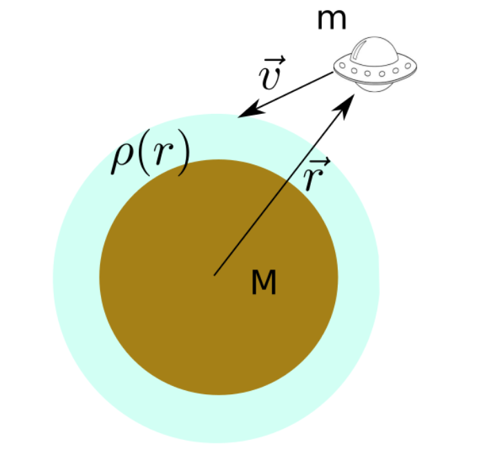

Forrige side

Velkommen til andre forelesning i del 1B! Til høyre er det noen punkter til repetisjon. Kun når du har full kontroll på alt dette kan du gå videre. Hvis ikke, gå tilbake til forrige forelesning for å repetere litt eller spør foreleser og/eller gruppelærer hvis det er ting som er uklare.
Er du klar? Neste side
Kan du prøve å tenke gjennom hvordan du ville utledet tolegemeproblemet hvis du skal gjøre det igjen uten hjelp av forelesningsnotater? Du trenger ikke å gjøre alle stegene i detalj, men tenke gjennom, steg for steg, hva vi gjorde. Hvis du er usikker på noen av stegene kikk tilbake.
Klarer du å bruke Newtons lover på vektorform, inkludert derivasjoner og bruk av enhetsvektorer i polarkoordinater?
Kjenner du til alle begrepene og egenskapene til ellipser som du skal kjenne i kurset?